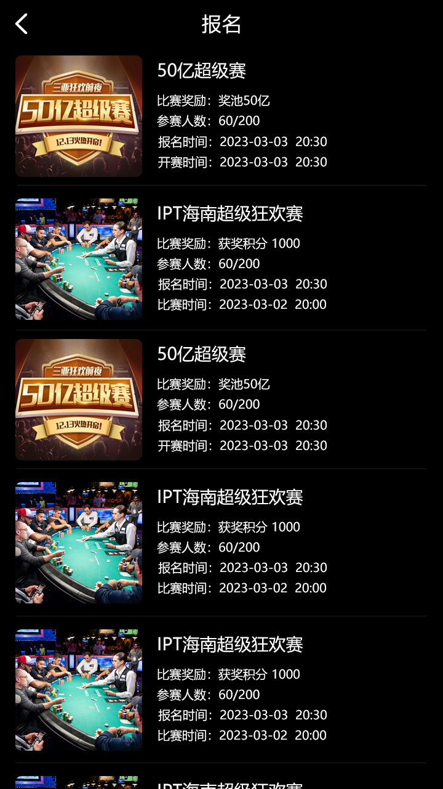
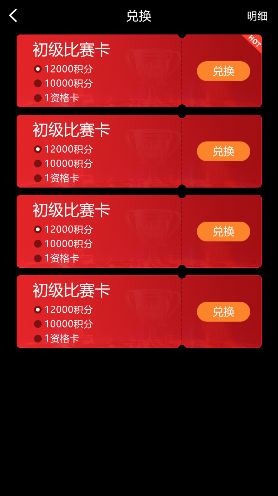
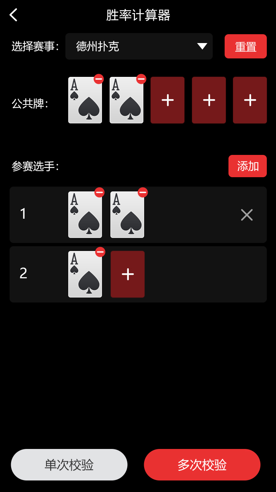

赛事入口
首页与线上赛事列表帮助玩家查看活动和资格入口。
这套德州扑克赛事管理项目不是单一牌桌演示。它围绕“发现赛事—参加资格赛—报名或兑换权益—进入比赛—衔接现场流程”组织用户入口，并包含比赛房间、成员与用户服务的 C++ 代码。
首页与线上赛事列表帮助玩家查看活动和资格入口。
报名页及兑换界面展示参赛条件和权益路径。
房间创建、查询、更新及成员状态接口承接比赛过程。
登录后从首页进入线上资格赛或目标线下活动。
查看条件和时间，完成报名或兑换参赛权益。
由比赛房间和成员接口维护赛事状态，再衔接现场运营。
以下图片均来自仓库 `Screenshots` 目录，不使用虚构后台或无关素材。








| 层级 | 仓库可核验内容 |
|---|---|
| 服务端 | C++ 大厅服务、用户处理、比赛房间与游戏逻辑入口 |
| 通信 | Tars 服务、Tars 协议和 Protobuf 引用 |
| 数据 | MySQL 客户端与数据代理接口 |
| 客户端资源 | Unity AssetBundle 及 manifest 文件 |
仓库并非 Node.js 项目；旧版 README 的 npm 快速启动指令不正确。Makefile 引用了外部公共协议和依赖路径，编译前必须完成依赖与交付范围核验。